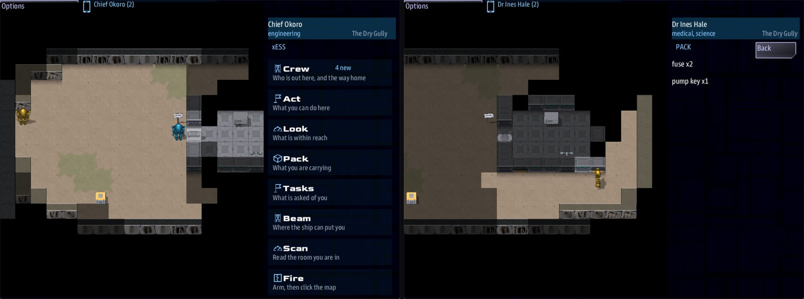

Class 3, Lecture 10 - Props¶
What you will have at the end¶
Your three areas have things in them, and the things do something.
The pump house has a locked door, and its key lies by the tent in the yard. A toolbox holds two fuses. A notice beside the door can be read once. Inside, a pump panel that only an engineer may touch drains the cistern. And in the cistern: a sluice gate that opens when the water goes, a spare power cell that was under it, and a gauge on a post in the middle of the tank.

Chief Okoro (left) at the pump house door, open now that the key is in the party's hands, and Dr Hale's Pack app (right) holding the two fuses from the toolbox and the pump key.You add eight records to the Props section of mission.amd, three short rooms to its
Scenes section, and three marks to ground\cistern.tiles.
The video¶
About 6 minutes. Subtitles are available in the player.
Before you start¶
MyAwayas Lecture 9 left it: three areas, a trail sign, a pump and a crate.sbs lint MyAwaysaysclean.- A command prompt open in
C:\Cosmos\data\missions.
Words for this lecture:
| Word | Meaning |
|---|---|
| Use | What a crew member does to a prop by clicking it. They walk up to it first |
| Pickup | A prop that goes into the pack of whoever uses it |
| Pack | What one crew member is carrying. Each has their own |
| Door | A prop that is in the way until something opens it |
| Terminal | A prop that opens a scene: a screen, a panel, a notice, a body |
What a prop does¶
A prop is a record in the Props section. What it does is decided by which fields it has. When somebody uses it, the game asks four questions in this order and stops at the first yes:
| Question | Field | Then |
|---|---|---|
| May this person use it at all? | Needs: |
If not, they are told so, and nothing else happens |
| Is it a door, and shut? | Opens with: |
It tries to open |
| Is it something to pick up? | Item: |
It goes into their pack and leaves the map |
| Does it open a scene? | Scene: |
The scene opens on their handheld |
A prop that gets through all four with no yes shows its description: the words under its fence. They are on the handheld's Look app. The click itself only walks you up to the prop.
Step 1 - A pickup¶
Open mission.amd and go to the end of the Props section. The last record there is the
Crate you added in Lecture 9. Under its closing ---, leave a blank line and add:
// ---- Lecture 10: the pump house and the cistern.
### [Pump house key](pump_key)
---
Area: landing
At: 14, 4
Sprite: prop:keycard
Item: pump_key
---
A brass key on a loop of wire, hung on a tent peg.
In the game the key hangs by the tent in the yard; picked up, it is in that crew member's
Pack app on the handheld. Item: pump_key is the whole of it. Using the prop puts one pump_key in your pack, and
the prop is gone from the map. An item's name is yours to make up: small letters, with
_ where you would put a space.
Step 2 - A door¶
Lecture 8 left a gap in the pump house wall, with the mark pump_door on it. Stand a
door there. Add, under the key:
### [Pump house door](pump_door)
---
Area: gully
Mark: pump_door
Sprite: prop:hatch
Open sprite: prop:doorframe
Blocks: yes
Opens with: key pump_key, check engineering 8, cut
Scan: A plain mechanical lock. No power to it at all.
---
A steel door, rusted at the hinges.
| Field | Means |
|---|---|
Blocks: yes |
Nobody walks through it while it is shut |
Opens with: |
The ways it opens, with commas between them |
Open sprite: |
The picture it changes to once it is open |
Opens with: takes four kinds of term. This door has three of them.
| Term | It opens when | Measured |
|---|---|---|
key pump_key |
Somebody in the party is carrying a pump_key. Not only the one at the door. The key is kept |
It opens. In the mock the handheld said pump key fits; in the game no words show, the picture changes |
check engineering 8 |
The one at the door rolls a ten sided die, adds their engineering, and makes 8 | Chief Okoro - engineering 4, rolled 4: 8 vs 8, success. |
cut |
Somebody shoots it with the weapon set to CUT. Lecture 11 has the weapon | A STUN shot did nothing. A CUT shot opened it |
signal <name> |
That signal is sent. Step 7 has one |
The terms are tried in the order you wrote them, by whoever clicks the door. Write key
first.
A check on a door can be tried again at once, and again. rolled 2: 6 vs 8, failure.,
click, and roll again. So a door with a check on it is a door that will open: the number
only decides how long the crew stands there. Lieutenant Reyes, with no engineering at
all, opened this one with a 9. If a door must stay shut until the story says so, give it
no check.
A door that has been opened stays open. Using it again only shows its description, on Look.
Step 3 - A pickup worth two¶
Add, under the door:
// `Qty:` is how many of the item one pickup is worth.
### [Toolbox](toolbox)
---
Area: gully
At: 19, 8
Sprite: prop:toolbox
Item: fuse
Qty: 2
---
A toolbox left open in the dust. Two heavy fuses, still in their paper.
One click, and the pack reads fuse x2. Qty: is a number written in figures.
Step 4 - A thing to read, once¶
Add, under the toolbox:
// `Once: yes`: the scene opens the first time. After that there is only the description.
### [Brittle notice](notice)
---
Area: gully
At: 11, 4
Sprite: prop:sign
Scene: notice
Once: yes
---
A notice pasted beside the door, gone brown and brittle. It will not survive being read twice.
Scene: notice is the key of a room in the Scenes section. You write that room in Step
6. A prop and the room it opens may share a key, as these two do. The starter's terminal
does the same.
Once: yes means the scene opens one time. After that a click only walks you up to the
notice, and its description is on the Look app. Write the description for whoever
comes back to it.
Be careful what you put behind a Once:. It counts the scene opening, not what was
answered. A crew member who opens it and backs out has used it up.
Step 5 - A terminal¶
Add, under the notice:
// `Needs:` is who may use it at all. Nobody covers for a `Needs:`.
### [Pump panel](pump_panel)
---
Area: gully
At: 16, 6
Sprite: prop:console
Scene: pump_panel
Blocks: yes
Needs: engineering
Scan: Three fuse clips, all empty. The pump below it is sound.
---
The pump's control panel: one lever, one dial, and a row of fuse clips.
Needs: engineering is a job from a crew member's Roles: line. Anyone else who clicks
the panel is told You would need engineering for that. and gets nothing more.
This is not like a choice with if engineering. In a scene, a choice for a missing job
is handed to somebody else to cover. Nobody covers for a Needs:. A party with no
engineer cannot work this panel at all, so never put the only way through a story behind
one. Here it is safe: the sentry in the yard still carries a power cell.
Scan: is what the handheld's Scan app says about the thing when a crew member can see
it. A prop with no Scan: gives its description there instead.
Step 6 - Their scenes¶
Go to the very end of the file, below the last line of Smoke. Leave two blank lines and add:
// ---- Lecture 10: what the new props open.
### [The Notice](notice)
% SPARE BEACON CELL KEPT BELOW, IN THE COLD. DRAIN THE TANK FIRST. The paper comes apart in your fingers as you read the last line.
- [Let the pieces fall]() ; learn spare
### [The Pump Panel](pump_panel)
% The dial sits at zero. The lever is stiff, and it moves.
- [Throw the lever](pump_run) ; signal cistern_drained
- [Leave it alone]()
### [The Pump Runs](pump_run)
% The pump coughs, catches, and settles to a hammering you can feel through the floor. Somewhere under your feet, a great deal of water starts to move.
- [Step back]()
These are rooms like any you have written. () closes the scene, and the crew member is
back on the map. ; learn spare is a fact for Lecture 12. ; signal cistern_drained is
what the next step listens for.
Save, and run lint:
== mission.amd ==
[WARNING] line 432:40: `pump_panel` emits signal `cistern_drained` but no `//signal/cistern_drained` route was found in the mission's .mast (nor a known driver signal) (signal-no-route)
1 amd + 1 mast file(s): 0 error(s), 1 warning(s)
True, for now. Nothing in the mission hears that signal yet.
Step 7 - A gate, a hidden cell and a gauge¶
Three more props, all in the cistern: in the game, a gate shut across the walkway, a
cell nobody can see yet, and a gauge out in the water. Each needs a mark. Open
ground\cistern.tiles.
In the editor, three times over: + Entry, then Paint and one click.
| Kind | Mark | Character | Cell |
|---|---|---|---|
floor |
sluice |
s |
14, 2: the gap in the wall of the east room |
floor |
crate |
c |
16, 2: inside the east room |
water |
gauge |
g |
6, 3: the middle of the tank |
Or in the text:
f: floor @foot
s: floor @sluice
c: floor @crate
g: water @gauge
---
WWWWWWWWWWWWWWWWWW
Wu_f__________W__W
W_~~~~~~~~~~__s_cW
W_~~~~g~~~~~__W__W
W_~~~~~~~~~~__W__W
W_____________W__W
WWWWWWWWWWWWWWWWWW
Then in mission.amd, back in the Props section, under the Pump panel:
// A door only a signal opens: nobody on the ground can force it.
### [Sluice gate](sluice)
---
Area: cistern
Mark: sluice
Sprite: prop:hatch
Open sprite: prop:doorframe
Blocks: yes
Opens with: signal cistern_drained
Scan: Held shut by the weight of the water behind it.
---
An iron gate across the walkway, wet to the top.
### [Spare power cell](spare_cell)
---
Area: cistern
Mark: crate
Sprite: prop:power_cell
Item: power_cell
Hidden until: cistern_drained
---
A beacon cell in a sealed case, left where the water would keep it cool.
// `Reach: 2`: it can be used from two cells away. It stands in the water, where
// nobody can stand beside it.
### [Depth gauge](gauge)
---
Area: cistern
Mark: gauge
Sprite: prop:scanner
Reach: 2
Scan: Four meters of water over the tank floor.
---
A brass depth gauge on a post in the middle of the tank. The needle reads FULL.
Opens with: signal cistern_drained is the fourth kind of term. Nobody can open this
gate by clicking it: the handheld says will not open from here. It opens when the
signal is sent, by the pump panel's answer, from another map.
Hidden until: cistern_drained means the prop is not on the map at all until that
signal is sent. It is not drawn, it is not scanned, and nobody can click where it will
be. One signal can do several things: this one opens the gate and uncovers the cell.
Reach: 2 is how near a crew member has to be to use the thing. Without the line it
is 1: the next cell. The gauge stands on water, two cells from the walkway, so it needs
2. A prop may stand on ground nobody can walk on. Only people may not.
Save both files and run lint. The warning from Step 6 is gone: the mission now has
something that hears cistern_drained.
Step 8 - Check it¶
Each row was tried on the finished files, one change at a time.
| The mistake | What lint says |
|---|---|
Scene: pump_panl |
dangling-scene: Scene points at pump_panl, which is not a defined node |
Once: yse, or Blocks: yse |
unknown-enum-value: yes and no are the two answers |
Opens wiht: |
unknown-field: Did you mean Opens with? |
| A prop typed under the People heading | unknown-field, once for each field a person does not have |
| A mark the cistern's legend does not have | tiles-unknown-mark, as in Lecture 9 |
The key is Item: pumphouse_key and the door wants key pump_key |
item-nothing-gives: nothing in this mission gives anybody pump_key. It lists what is given. In the game the key does not fit, and the door falls back on its other ways |
Item: pump key, with a space |
The same warning, on the door. It is picked up as pump key, which no door asks for |
Opens with: key brass_key, and nothing in the mission gives a brass_key |
item-nothing-gives. A door nothing opens: needs brass key, for ever |
Opens with: kee pump_key |
opens-with-shape: kee is not a way a door opens, so this is skipped. In the game: locked, for ever |
Opens with: key pump_key check engineering 8 cut, with no commas |
opens-with-shape: everything from check on is thrown away. Only the key is left |
Opens with: check engineering, with no number |
opens-with-shape: a check is a skill and a number. In the game: locked, for ever |
Opens with: signal cistern_draind on the gate |
ground-signal-unsent: nothing in the mission sends it. The lever is thrown, the cell appears, and the gate stays shut |
Hidden until: cistern_draned on the cell |
ground-signal-unsent. The gate opens, and the cell never appears |
Qty: two |
not-a-number: Write it in figures. The game reads it as 1, and says so once in mast.runtime.log |
What lint cannot see¶
Lint reads a door's Opens with: line, and it checks each key and each signal against
the rest of the mission. It does not check a skill's name, the order of the ways in, or
a Needs: line. All of these lint clean.
| The mistake | What happens |
|---|---|
Blocks: yes and no Opens with: line |
Not a door at all: a wall with a door's picture. Clicking it shows the description |
check enginering 8, a skill nobody has |
It still rolls, with a skill of 0. It opened on an 8 |
Opens with: check engineering 8, key pump_key, the check written first |
A crew member holding the key rolled a 1 and the door stayed shut. The key was never tried |
A door with no Blocks: line |
The crew walks through it while it is shut |
Needs: enginering |
Nobody may use it: You would need enginering for that., said to the engineer |
The gauge with no Reach: line |
A click on it does nothing. Nobody can get near enough |
Once: yse |
Lint does warn. In the game the notice opens every time |
Needs: takes any condition a choice takes. Needs: holding fuse works: with a fuse in
their pack, the engineer got the scene. But the refusal reads your words back, You would
need holding fuse for that., so a job reads best.
So check your doors with a pencil. For each door, write down each way it opens, in the order you wrote them, and beside each skill who in the party has it.
Step 9 - Play it¶
The Science console is Dr Hale and the Engineering console is Chief Okoro.
- Both beam down. Deal with the sentry, or walk east along the north edge of the yard, by the path behind the relay house, well clear of it.
- As Dr Hale, pick up the key by the tent. Both walk east by the path behind the relay house, past the trail sign, and take the exit, one at a time.
- As Chief Okoro, click the pump house door. He is not carrying the key. She is, and that is enough: the door opens. No words come up. Its picture changes to an open doorframe.
- As Dr Hale, pick up the toolbox, then read the notice. Click it again: this time she only walks up to it, and its description is on Look.
- As Dr Hale, click the pump panel. Look says
You would need engineering for that. - As Chief Okoro, take the stairs down. On arrival only the west end is drawn. Walk east
along the walkway, and the sluice gate comes into view, shut. From the walkway, open
Look: it offers
Use Depth gauge, out in the water, and readsThe needle reads FULL.Click the sluice gate. - Go back up, click the pump panel, and throw the lever.
- Go down again. The gate is open, and there is a power cell in the east room.
Every line of that was played by a script for this page, with two stand-in consoles, and then in the game itself for the video's pictures.
If something goes wrong¶
| What you see | Why | What to do |
|---|---|---|
| A prop is not on the map | Its Area: or Mark: names nothing. Lint says so |
Run lint |
| The door is drawn, and you walk straight through it | It has no Blocks: yes |
Add the line |
| A click on a prop walks you to it and nothing else happens | It has no field that does anything, and no description. It is scenery | Give it a line of description, or a field |
You would need engineering for that. |
Needs:, and you are not that |
Play the Engineering console |
Exercise¶
- Give the pump house door a second key. Stand a pickup in the cistern's east room that
gives a
master_key, and addkey master_keyto the door'sOpens with:line. Is that a way in that anyone could ever use? Say why. - Take
check engineering 8off the pump house door. Play it with one Science console and no key. Then put the check back. - Add a second notice somewhere in the yard, with
Once: yesand a room of its own that teaches a fact. - Break it and read lint: misspell the scene's key on the notice; type
Once: maybe.
Then answer on paper, from the file alone:
- The relay door in the starter has four ways to open. For each, where does the key, the skill or the signal come from?
- Which of your props can a party with no engineer not use?
- What two things does
cistern_draineddo?
Checkpoint¶
You are done when all five are true:
sbs lint MyAwaysaysclean.- The pump house door opens for a party that carries the key, and stays open.
- The notice opens its scene once.
- Throwing the lever opens the sluice gate and puts the spare cell on the map.
- You can say what
Item:,Qty:,Scene:,Once:,Needs:,Reach:,Blocks:,Opens with:,Hidden until:andScan:each do.
Next¶
Lecture 11 puts somebody in the gully to talk to, and something in the cistern that does not want to be talked to.
Further reading¶
Nothing here is needed for Lecture 11.
- "Ground tile maps" in the library documentation: "Placing things on the ground".
- The Props section of Dawnline's
world.amd: forty-two of them, every kind on this page.
Download this lecture's finished files (a zip of its example folder).